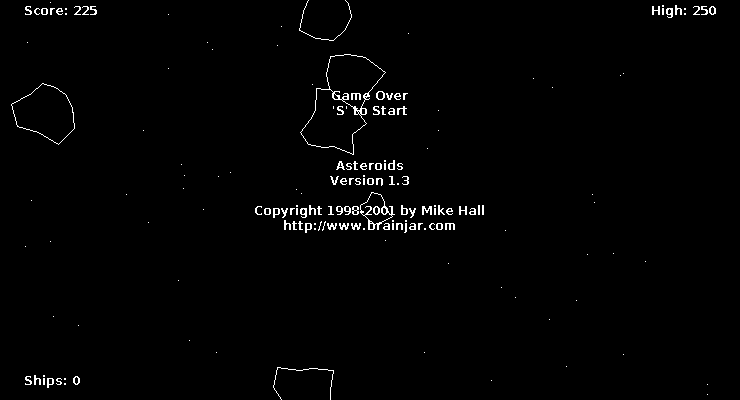
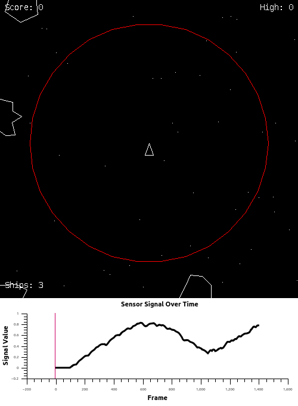

RELOCATE THE FOLLOWING TO SIDEBAR
This project uses an unsigned JAR file which may be disallowed by your default Java settings.
If you are not presented with a dialog asking for permission to run the Applets on this site, you will have to add an exception to your Java Security settings:
Open the Java Control Panel (Windows users may search for Configure Java in Start) Select the Security Tab Edit the Exception Site List and add the line: http://ndmacdon.github.io/ ~Java Security Settings
Configure Java
Exception Site List
http://ndmacdon.github.io/
~Java Security Settings
Visit the Fullscreen Demo page to see the program running in a larger window.
BEGIN BODY
TODO
Braitenberg vehicles were created as a biologically inspired thought experiment by Valentino Braitenberg. Braitenberg’s vehicles are, in essence reactive, agents with robot bodies. In his book, Vehicles~TITLE, Braitenberg develops 14 vehicles, each more sophisticated than the last. The early vehicles are constructed of a few simple components wired together in different configurations. The components and combinations of each vehicle are carried forward to subsequent vehicles. Later vehicles are built by an evolutionary process of duplication and mutation rather than being designed by hand. Braitenberg attributes lifelike qualities to his vehicles as they progress and they gain in turn: intincts, emotions, logic, concepts, ideas, foresight and egotism.
Braitenberg takes a relaxed approach to the realities of his vehicles but he does so with decades of experience working as a neuroscientist. The basic components of Braitenberg vehicles are very simple; sensors sensitive to some quality of the environment, wired-connections with various properties (e.g. signal inversion, temperature-variable resistance etc.) and threshold devices (circuits which output a signal only when fed certain inputs) which act as the building blocks of vehicle logic. Braitenberg casually introduces each component making Vehicles~TITLE feel like a creative exploration of ideas. Yet, each component has been carefully selected to approximate a real biological structure present in nature. ~~~
Vehicles begins with a very simple design involving a single sensor and motor. Depicted in figure XXX, vehicle one senses the absolute temperature of its environment. The sensor sends signals to a single motor at the rear of the vehicle. The result is a vehicle that moves quickly through hot areas and slows down in cold ones. Braitenberg describes the motivations of his vehicle as follows:
It is restless, you would say, and does not like warm water. But it is quite stupid, since it is not able to turn back to the nice cold spot it overshot in its restlessness. Anyway you would say, it is ALIVE, since you have never seen a particle of dead matter move around like that. Vehicles p. 5
Braitenberg develops his vehicles by introducing a new component and combining it with the advances of the existing vehicles. Each component is very simple on its own. Yet, this technique of compounded design results in complex behaviours attributable to living organisms.
VEHICLE 7

Asteroids is a two-dimensional action video game. Players control a triangular ship inside a field of drifting asteroids. The ship can turn left and right, can fire forward and reverse thrusters (which apply force to the ship according to the direction it is facing), can shoot a cannon, and may teleport to a random location on the screen.
Players are pitted against asteroids, UFOs and missiles. Asteroids are represented by circular polygons. Each asteroid is created with a movement vector which is static, random and specific to that particular asteroid. Players can shoot an asteroid, UFO or missile with thier cannon to destroy it. Destroyed asteroids may fragment into multiple smaller asteroids. UFOs shoot missiles which home to the player’s location. Colliding with an asteroid, UFO or missile is fatal to the player.
Objects in Asteroids ‘wrap’ around the edges of the screen. So when an object passes out of the left boundary of the screen it appears on the right side of the screen. The same wrapping applies to the vertical direction. In this way we can imagine Asteroids as taking place on the surface of a sphere.
Players receive points for destroying asteroids with their cannon. Players start with three lives to try and obtain as many points as possible; points persist between lives but are reset to zero when lives are depleted. If the player earns 4000 points they receive another life, if the player earns 2750 points a UFO is spawned.
In my work, I apply Braitenberg’s ideas to create an agent that effectively plays the classic video game Asteroids. The goal is to design a very general robot that is effective in the environment, not design an AI which is narrowly focused on the implementation details of this particular game. Braitenberg’s book was designed as a thought experiment; free from the realities of an implementation. My work is implemented in an existing game engine. Because of this, there are some necessary differences between my work and Braitenberg’s.
Braitenberg’s vehicles had rectangular bodies. However, the player ship in asteroids is a triangle. I retain the triangular ship of Asteroids because the shape affects the collision model. Changing this model has strategic implications for the gameplay and I wanted to stay as true to the original Asteroids game as possible.
Developing appropriate sensors for my work was a major issue. Braitenberg describes the sensors of his vehicles with elegance and brevity but his descriptions lack the specificity required for a direct implementation. As a result my sensors are the product of many iterations.
Two characteristics define the sensors in my work: the field of detection and the quality being detected.

http://people.cs.uchicago.edu/~wiseman/vehicles/ http://braitenbergsim.sourceforge.net/ https://wiki.qut.edu.au/display/cyphy/Braitenberg+Vehicle+Simulator http://www.florajs.com/
First and foremost, the project needs a new technology platform. The Java Applet is a dying technology. It is poorly supported by modern browsers and is no longer seeing active developments. Porting to another more suitable platform should be the first priority of any efforts to continue the project (JavaScript being the obvious choice).
The agents developed here are interesting to watch but they pose some interesting questions for further consideration. Reactive agents like my pilots have complex dynamic behaviour patterns which make them excellent in dealing with unpredictable environments. They might be well suited to things like crowd navigation. We can imagine similar designs used in a courier-bot delivering packages through city streets. It uses a long term planning algorithm to reach its destination but switches on a reactive crowd-navigation sub-routine when surrounded by too many people. However, it is these complex emergent behaviours which make Braitenberg Pilots poorly suited to high stakes tasks like driving a vehicle. In such tasks, we prefer a robot which does not do anything unexpected and one which will perform consistently regardless of minor changes to its components. This unpredictability would however make Braitenberg Pilots an excellent childrens toy. With simple interchangeable components; a few simple motors, sensors and modulators, one could construct any number of curious, scurrying robotic creatures. By making slight changes to sensor or modulator knobs a vast array of behaviours would keep curious tinkerers endlessly busy. The primary attraction of such robots would be twofold: designing with intention and observing novel behaviours created by chance.